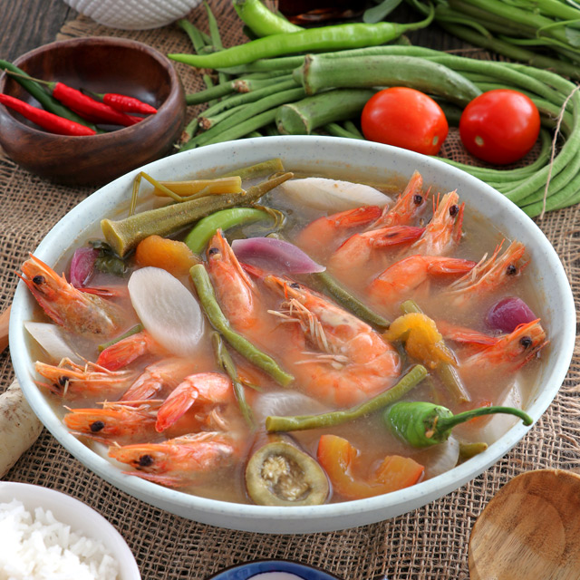

Sinigang na Hipon is a Filipino main dish having shrimp as the main ingredient. Fresh Shrimps and vegetables are cooked by boiling in a sour broth. The commonly used souring agent is tamarind. However, other fruits such as guava, tomato, bilimbi (known as kamias), green mango, pineapple, and wild mangosteen (santol) can also be used.
As a 100% certified Filipino, this dish is definitely one of my personal favorites
Servings for 4 people: